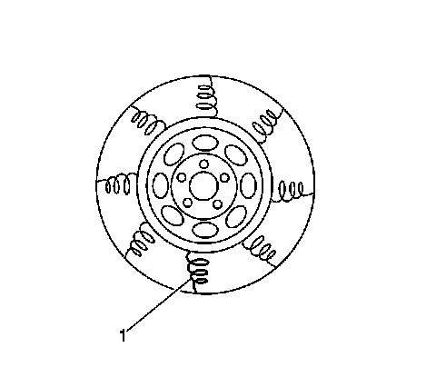
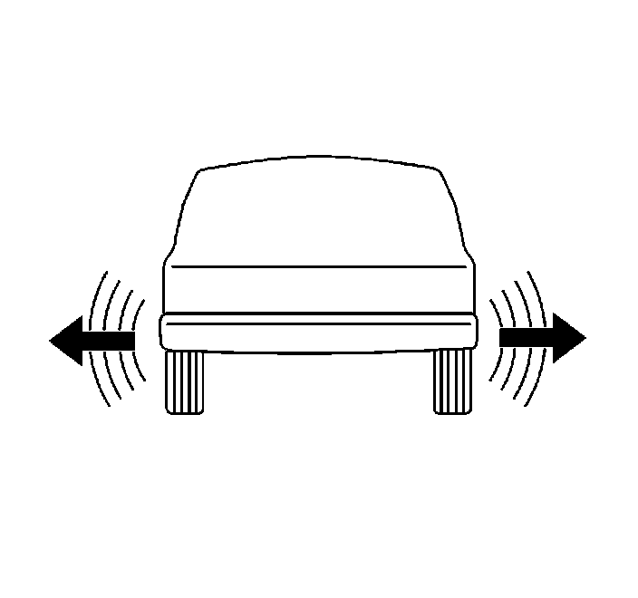

Tire and Wheel Assembly Isolation Test
Tire and Wheel Assembly Isolation Test
Force Variation
Force variation refers to a radial or lateral movement of the tire and wheel assembly which acts much like runout, however, force variation has to do with variations in the construction of the tire. These variations in tire construction may actually cause vibration in a vehicle, even though the tire and wheel assembly runout and balance may be within specifications.
Radial Force Variation

Radial force variation refers to the difference in the stiffness of a tire sidewall as the tire rotates and contacts the road. Tire sidewalls have some stiffness due to splices in the different plies of the tire, but these stiffness differences do not cause a problem unless the force variation is excessive. Stiff spots (1) in a tire sidewall can deflect a tire and wheel assembly upward as the assembly contacts the road.
Lateral Force Runout
Tire Diagnosis - Waddle Complaint:

Lateral force variation refers to the difference in the stiffness or conformity of the belts within a tire as the tire rotates and contacts the road. Tire belts may have some stiffness or conformity differences, but these differences do not cause a problem unless the force variation is excessive. These variations in the belts of the tire can deflect the vehicle sideways or laterally. A shifted belt inside a tire may cause lateral force variation.
In most cases where excessive lateral force variation exists, the vehicle will display a wobble or waddle at low speeds, 8-40 km/h (5-25 mph), on a smooth road surface.
Isolation Test Procedure
Perform the following test in order to determine if force variation is present in the vehicle.
1. Substitute a set of KNOWN GOOD, pre-tested tire and wheel assemblies of the same size and type for the suspected original assemblies. Refer to Tire and Wheel Removal and Installation (Service and Repair) .
2. Road test the vehicle to determine if the vibration is still present. Refer to Vibration Analysis - Road Testing (Vibration Analysis - Road Testing) .
3. If the vibration is still present while using the known good set of tire and wheel assemblies, then force variation is not the cause of the vibration.
4. If the vibration is eliminated when using the known good set of tire and wheel assemblies, install one of the original tire and wheel assemblies using the matchmarks made prior to removal. Refer to Tire and Wheel Removal and Installation (Service and Repair) . Road test the vehicle to determine if the vibration has returned. Refer to Vibration Analysis - Road Testing (Vibration Analysis - Road Testing) .
5. Continue the process of installing the original tire and wheel assemblies one at a time, then road testing the vehicle, until the tire and wheel assembly, or assemblies which is causing the vibration has been identified.
6. Replace the tire, or tires on the vibration-causing tire and wheel assembly, or assemblies, then balance the assembly, or assemblies. Refer to Tire and Wheel Assembly Balancing - Off Vehicle (Tire and Wheel Assembly Balancing - Off Vehicle) .